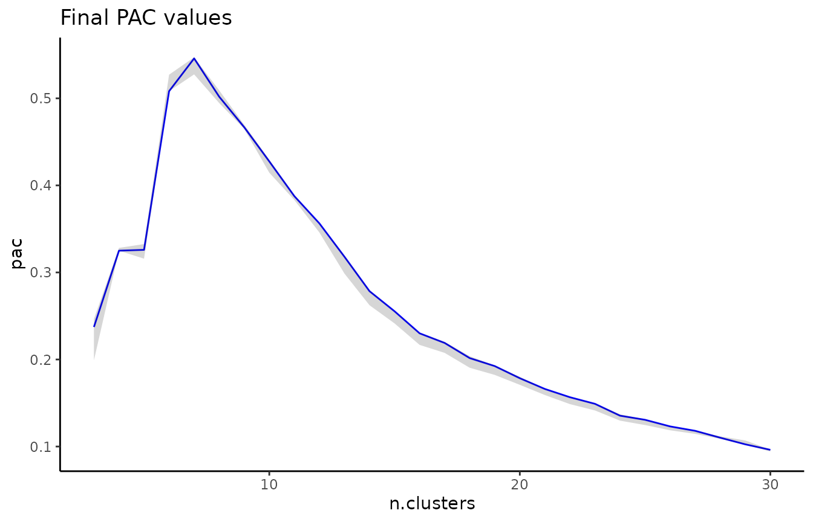
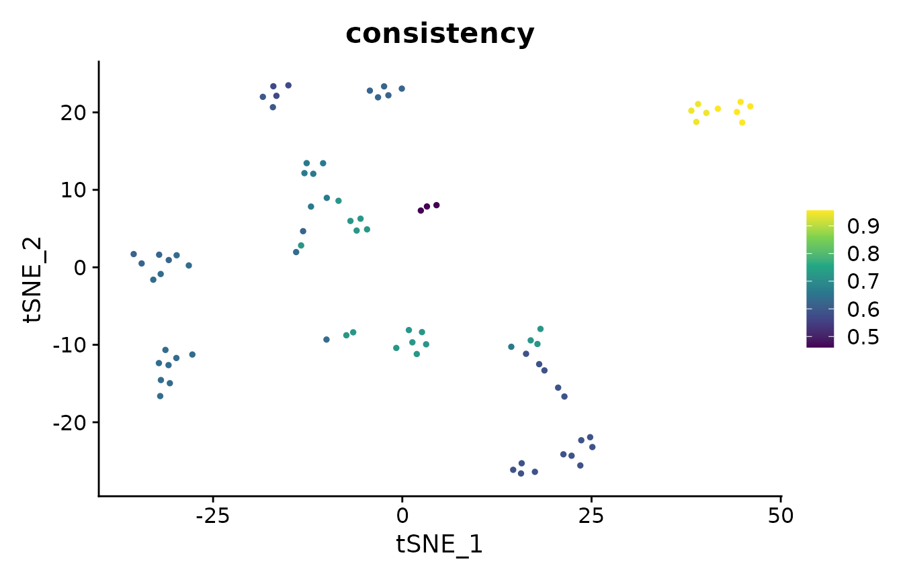

Evaluating single-cell clustering with ClustAssess
Source:vignettes/ClustAssess.Rmd
ClustAssess.RmdIn this vignette we will illustrate several of the tools available in ClustAssess on a small single-cell RNA-seq dataset.
library(Seurat)
#> Loading required package: SeuratObject
#> Loading required package: sp
#>
#> Attaching package: 'SeuratObject'
#> The following object is masked from 'package:base':
#>
#> intersect
library(ClustAssess)
data("pbmc_small")
# we will use the pbmc_small single-cell RNA-seq dataset available via Seurat
DimPlot(pbmc_small, group.by = "letter.idents")
Proportion of ambiguously clustered pairs
The proportion of ambiguously clustered pairs (PAC) uses consensus clustering to infer the optimal number of clusters for the data, by observing how variably pairs of elements cluster together. The lower the PAC, the more stable the clustering. PAC was originally presented in https://doi.org/10.1038/srep06207.
# retrieve scaled data for PAC calculation
pbmc.data <- GetAssayData(pbmc_small, assay = "RNA", slot = "scale.data")
#> Warning: The `slot` argument of `GetAssayData()` is deprecated as of SeuratObject 5.0.0.
#> ℹ Please use the `layer` argument instead.
#> This warning is displayed once every 8 hours.
#> Call `lifecycle::last_lifecycle_warnings()` to see where this warning was
#> generated.
# perform consensus clustering
cc.res <- consensus_cluster(t(pbmc.data),
k_max = 30,
n_reps = 100,
p_sample = 0.8,
p_feature = 0.8,
verbose = TRUE
)
#> Calculating consensus clustering
# assess the PAC convergence for a few values of k - each curve should
# have converged to some value
k.plot <- c(4, 6, 8, 10)
pac_convergence(cc.res, k.plot)
# visualize the final PAC across k - there seems to be a local maximum at k=7,
# indicating that 7 clusters leads to a less stable clustering of the data than
# nearby values of k
pac_landscape(cc.res)
Element-centric clustering comparison
We compare the similarity of clustering results between methods (in this case, between Louvain community detection and k-means) using element-centric similarity, which quantifies the clustering similarity per cell. Higher ECS indicates that an observation is clustered similarly across methods. ECS was introduced in https://doi.org/10.1038/s41598-019-44892-y.
# first, cluster with Louvain algorithm
pbmc_small <- FindClusters(pbmc_small, resolution = 0.8, verbose = FALSE)
DimPlot(pbmc_small, group.by = "seurat_clusters")
# also cluster with PCA+k-means
pbmc_pca <- Embeddings(pbmc_small, "pca")
pbmc_small@meta.data$kmeans_clusters <- kmeans(pbmc_pca,
centers = 3,
nstart = 10,
iter.max = 1e3
)$cluster
DimPlot(pbmc_small, group.by = "kmeans_clusters")
# where are the clustering results more similar?
pbmc_small@meta.data$ecs <- element_sim_elscore(
pbmc_small@meta.data$seurat_clusters,
pbmc_small@meta.data$kmeans_clusters
)
FeaturePlot(pbmc_small, "ecs")
mean(pbmc_small@meta.data$ecs)
#> [1] 0.6632927Jaccard similarity of cluster markers
As a common step in computational single-cell RNA-seq analyses, discriminative marker genes are identified for each cluster. These markers are then used to infer the cell type of the respective cluster. Here, we compare the markers obtained for each clustering method to ask: how similarly would each cell be interpreted across clustering methods? We compare the markers per cell using the Jaccard similarity (defined as the size of the intersect divided by the size of the overlap) of the marker gene lists. The higher the JSI, the more similar are the marker genes for that cell.
# first, we calculate the markers on the Louvain clustering
Idents(pbmc_small) <- pbmc_small@meta.data$seurat_clusters
louvain.markers <- FindAllMarkers(pbmc_small,
logfc.threshold = 1,
min.pct = 0.0,
test.use = "roc",
verbose = FALSE
)
# then we get the markers on the k-means clustering
Idents(pbmc_small) <- pbmc_small@meta.data$kmeans_clusters
kmeans.markers <- FindAllMarkers(pbmc_small,
logfc.threshold = 1,
min.pct = 0.0,
test.use = "roc",
verbose = FALSE
)
# next, compare the top 10 markers per cell
pbmc_small@meta.data$marker.gene.jsi <- marker_overlap(louvain.markers,
kmeans.markers,
pbmc_small@meta.data$seurat_clusters,
pbmc_small@meta.data$kmeans_clusters,
n = 10,
rank_by = "power"
)
# which cells have the same markers, regardless of clustering?
FeaturePlot(pbmc_small, "marker.gene.jsi")
mean(pbmc_small@meta.data$marker.gene.jsi)
#> [1] 0.5738636Element-wise consistency
How consistently are cells clustered by k-means? We will rerun k-means clustering 20 times to investigate.
clustering.list <- list()
n.reps <- 20
for (i in 1:n.reps) {
# we set nstart=1 and a fairly high iter.max - this should mean that
# the algorithm converges, and that the variability in final clusterings
# depends mainly on the random initial cluster assignments
km.res <- kmeans(pbmc_pca, centers = 3, nstart = 1, iter.max = 1e3)$cluster
clustering.list[[i]] <- km.res
}
# now, we calculate the element-wise consistency (aka frustration), which
# performs pair-wise comparisons between all 20 clusterings; the
# consistency is the average per-cell ECS across all comparisons. The higher
# the consistency, the more consistently is that cell clustered across
# random seeds.
pbmc_small@meta.data$consistency <- element_consistency(clustering.list)
# which cells are clustered more consistently?
FeaturePlot(pbmc_small, "consistency")
mean(pbmc_small@meta.data$consistency)
#> [1] 0.6712922Session info
sessionInfo()
#> R version 4.3.3 (2024-02-29 ucrt)
#> Platform: x86_64-w64-mingw32/x64 (64-bit)
#> Running under: Windows 11 x64 (build 22631)
#>
#> Matrix products: default
#>
#>
#> locale:
#> [1] LC_COLLATE=Romanian_Romania.utf8 LC_CTYPE=Romanian_Romania.utf8
#> [3] LC_MONETARY=Romanian_Romania.utf8 LC_NUMERIC=C
#> [5] LC_TIME=Romanian_Romania.utf8
#>
#> time zone: Europe/Bucharest
#> tzcode source: internal
#>
#> attached base packages:
#> [1] stats graphics grDevices utils datasets methods base
#>
#> other attached packages:
#> [1] ClustAssess_1.0.0 Seurat_5.0.3 SeuratObject_5.0.1 sp_2.1-3
#>
#> loaded via a namespace (and not attached):
#> [1] RColorBrewer_1.1-3 jsonlite_1.8.8 magrittr_2.0.3
#> [4] spatstat.utils_3.0-4 farver_2.1.1 rmarkdown_2.26
#> [7] fs_1.6.3 ragg_1.3.0 vctrs_0.6.5
#> [10] ROCR_1.0-11 memoise_2.0.1 spatstat.explore_3.2-7
#> [13] progress_1.2.3 htmltools_0.5.8 sass_0.4.9
#> [16] sctransform_0.4.1 parallelly_1.37.1 KernSmooth_2.23-22
#> [19] bslib_0.7.0 htmlwidgets_1.6.4 desc_1.4.3
#> [22] ica_1.0-3 plyr_1.8.9 plotly_4.10.4
#> [25] zoo_1.8-12 cachem_1.0.8 igraph_2.0.3
#> [28] mime_0.12 lifecycle_1.0.4 iterators_1.0.14
#> [31] pkgconfig_2.0.3 Matrix_1.6-5 R6_2.5.1
#> [34] fastmap_1.1.1 fitdistrplus_1.1-11 future_1.33.2
#> [37] shiny_1.8.1.1 digest_0.6.35 colorspace_2.1-0
#> [40] patchwork_1.2.0 tensor_1.5 RSpectra_0.16-1
#> [43] irlba_2.3.5.1 textshaping_0.3.7 labeling_0.4.3
#> [46] progressr_0.14.0 fansi_1.0.6 spatstat.sparse_3.0-3
#> [49] httr_1.4.7 polyclip_1.10-6 abind_1.4-5
#> [52] compiler_4.3.3 withr_3.0.0 fastDummies_1.7.3
#> [55] highr_0.10 MASS_7.3-60.0.1 tools_4.3.3
#> [58] lmtest_0.9-40 httpuv_1.6.15 future.apply_1.11.2
#> [61] goftest_1.2-3 glue_1.7.0 nlme_3.1-164
#> [64] promises_1.2.1 grid_4.3.3 Rtsne_0.17
#> [67] cluster_2.1.6 reshape2_1.4.4 generics_0.1.3
#> [70] gtable_0.3.4 spatstat.data_3.0-4 tidyr_1.3.1
#> [73] hms_1.1.3 data.table_1.15.4 utf8_1.2.4
#> [76] spatstat.geom_3.2-9 RcppAnnoy_0.0.22 ggrepel_0.9.5
#> [79] RANN_2.6.1 foreach_1.5.2 pillar_1.9.0
#> [82] stringr_1.5.1 spam_2.10-0 RcppHNSW_0.6.0
#> [85] later_1.3.2 splines_4.3.3 dplyr_1.1.4
#> [88] lattice_0.22-5 survival_3.5-8 deldir_2.0-4
#> [91] tidyselect_1.2.1 miniUI_0.1.1.1 pbapply_1.7-2
#> [94] knitr_1.45 gridExtra_2.3 scattermore_1.2
#> [97] xfun_0.43 matrixStats_1.2.0 stringi_1.8.3
#> [100] lazyeval_0.2.2 yaml_2.3.8 evaluate_0.23
#> [103] codetools_0.2-19 tibble_3.2.1 cli_3.6.2
#> [106] uwot_0.1.16.9000 xtable_1.8-4 reticulate_1.35.0
#> [109] systemfonts_1.0.6 munsell_0.5.1 jquerylib_0.1.4
#> [112] Rcpp_1.0.12 globals_0.16.3 spatstat.random_3.2-3
#> [115] png_0.1-8 fastcluster_1.2.6 parallel_4.3.3
#> [118] pkgdown_2.0.7 ggplot2_3.5.0 prettyunits_1.2.0
#> [121] dotCall64_1.1-1 listenv_0.9.1 viridisLite_0.4.2
#> [124] scales_1.3.0 ggridges_0.5.6 crayon_1.5.2
#> [127] leiden_0.4.3.1 purrr_1.0.2 rlang_1.1.3
#> [130] cowplot_1.1.3